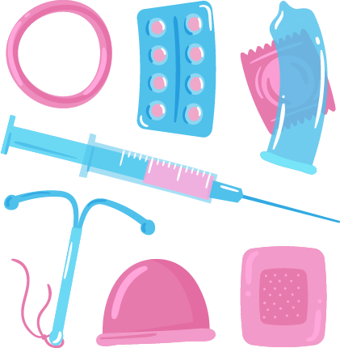
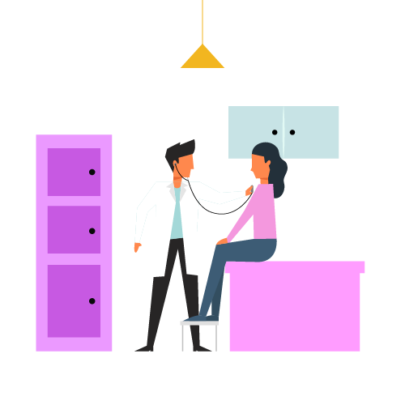

Métodos Anticonceptivos
¿Qué son los métodos anticonceptivos?
Los métodos anticonceptivos son herramientas médicas, químicas o naturales que permiten prevenir embarazos no deseados. Algunos también protegen contra enfermedades de transmisión sexual (ETS).
Clasificación de los métodos anticonceptivos
- Hormonales: Como las pastillas, inyecciones, parches o implantes que inhiben la ovulación.
- De barrera: Como los condones, que impiden el contacto entre esperma y óvulo.
- De emergencia: Píldoras que se toman después de una relación sexual sin protección.
- Naturales: Basados en el control del ciclo menstrual y la abstinencia periódica.
- Permanentes: Cirugías como la ligadura de trompas o la vasectomía.
¿Cómo elegir el método adecuado?
Elegir el anticonceptivo correcto depende de tus necesidades personales, tu estado de salud, si deseas tener hijos en el futuro, y tu estilo de vida. Siempre es recomendable consultar a un profesional de salud.
Ventajas y desventajas
- Son eficaces y permiten planificación familiar.
- Algunos reducen dolores menstruales y regulan ciclos.
- Pueden tener efectos secundarios o interferir con la salud hormonal.
- No todos protegen contra ETS.
Mitos frecuentes
- “Los anticonceptivos causan infertilidad” → FALSO
- “Los implantes engordan” → DEPENDE del metabolismo de cada persona
- “El condón quita placer” → FALSO, existen modelos muy cómodos y delgados
Ilustración explicativa
Conclusión
El conocimiento sobre los métodos anticonceptivos ayuda a tomar decisiones responsables. La sexualidad saludable empieza con información clara, accesible y sin prejuicios.
📘 Evalúa tus conocimientos